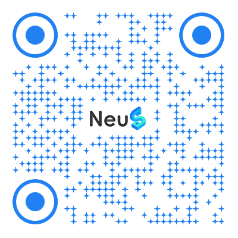
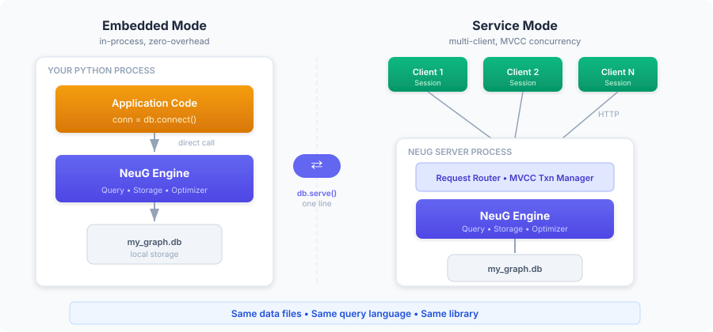
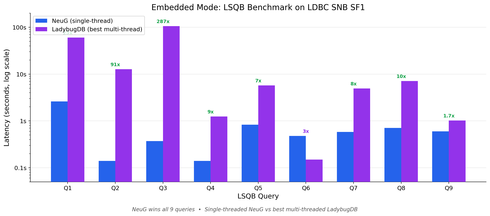
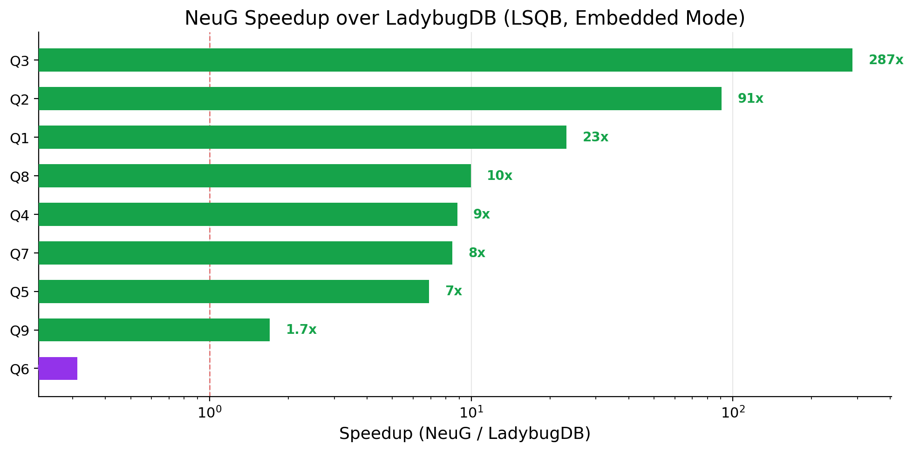
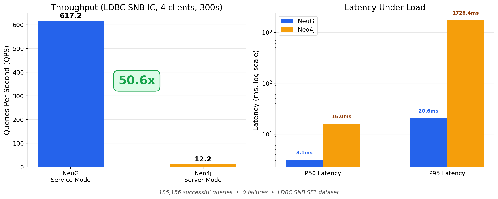
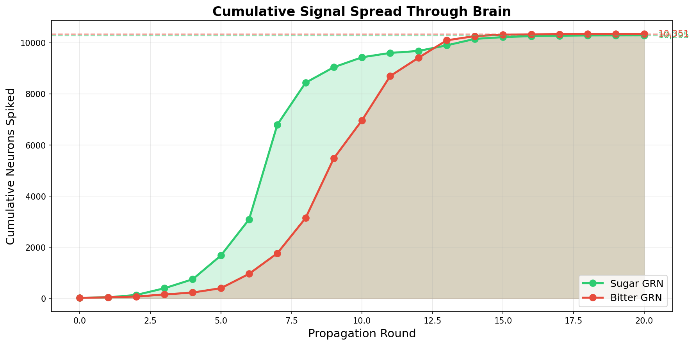
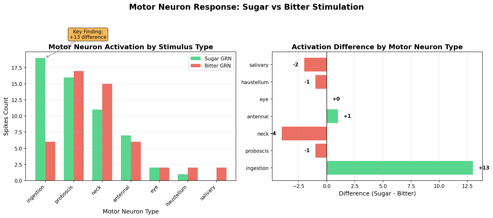
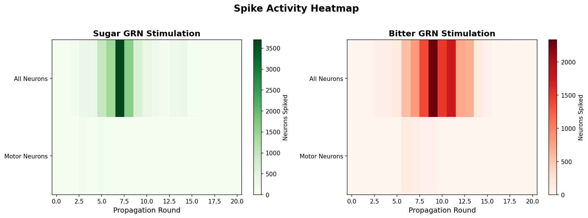

Making Graph Databases as Simple as SQLite

Scan to visit github.com/alibaba/neug
Dr. Longbin Lai · April 2026
Traditional workflow
What we really want
pip install
→
import & query
SQLite made relational DBs trivial to embed.
DuckDB did the same for analytics.
NeuG brings that to graph data.
Zero Config
No server. Runs in-process.
Sub-ms Latency
Direct memory access.
Full Cypher
Paths, shortest path, subqueries.
Dual Mode
Embedded ↔ Service, one line.
from neug.database import Database
db = Database("social.db") # Just a file — like SQLite
conn = db.connect()
conn.execute("CREATE NODE TABLE Person (id INT64, name STRING, PRIMARY KEY(id))")
conn.execute("CREATE REL TABLE Knows (FROM Person TO Person, since DATE)")
conn.execute("CREATE (:Person {id: 1, name: 'Alice'})")
conn.execute("COPY Person FROM 'persons.csv' (HEADER=true)")
result = conn.execute("""
MATCH (a:Person {name:'Alice'})-[:Knows*1..2]->(f:Person)
RETURN DISTINCT f.name
""")

Embedded Mode
In-process, zero overhead. For data science, ML pipelines, prototyping.
Service Mode
HTTP/RPC with MVCC. For web apps, real-time APIs, multi-user.
Same library, same data, same queries. Develop embedded → deploy as service. Zero migration.
Embedded Mode
from neug.database import Database
db = Database("my_graph.db")
conn = db.connect()
conn.execute("""CREATE NODE TABLE Person
(id INT64, name STRING, PRIMARY KEY(id))""")
conn.execute("""CREATE REL TABLE Knows
(FROM Person TO Person, since DATE)""")
conn.execute("COPY Person FROM 'persons.csv'")
conn.execute("COPY Knows FROM 'knows.csv'")
result = conn.execute("""
MATCH (a:Person)-[:Knows*1..3]->(b:Person)
RETURN a.name, b.name""")
Switch to Service — one line
# Everything above stays the same, then:
uri = db.serve(host="localhost", port=10000,
blocking=True)
# Now accessible over HTTP/RPC
# Multi-client, MVCC transactions
Extension System
INSTALL JSON; LOAD JSON;
INSTALL Parquet; LOAD Parquet;
LOAD lif_sim; -- custom C++ extensions
Postgres/DuckDB-style extension model — keep the core lean, add capabilities on demand.


NeuG single-thread beats LadybugDB (Kùzu) multi-thread on 8 of 9 queries. Powered by GOpt graph-native optimizer with cost-based pattern decomposition.

50.6× throughput
Built on GraphScope Flex — LDBC SNB world record: 80K+ QPS
When graph analysis becomes as simple as loading a file,
the interesting part is no longer the tooling, but the questions you dare to ask.
Linux Kernel
730K nodes · 1.08M edges
Open Source Health
74 projects · 60 months
Fruit Fly Brain
139K neurons · 54M synapses
Exploratory BI
22M entities · 94M edges
Graph Schema · 5 node types, 9 edge types
Pre-built and shipped as a single NeuG database file (linux_db.zip) — download, unzip, query. No indexing, no rebuild.
The simplest question we can ask: "If I change one function's behavior, how many other functions might break — in the worst case?"
From grep to Cypher
① load the kernel — two lines:
import neug
db = neug.Database("linux_db") # unzipped from linux_db.zip
conn = db.connect()
② "which modules does everyone depend on?"
MATCH (caller:Function)-[:CALLS]->(callee:Function)
WHERE caller.module <> callee.module
RETURN callee.module AS mod,
count(DISTINCT caller.module) AS inbound
ORDER BY inbound DESC LIMIT 10;
③ "3-hop blast radius of free_irq?"
MATCH (f:Function {name:'free_irq'})
<-[:CALLS*1..3]-(affected:Function)
RETURN count(DISTINCT affected);
-- → 1,390 functions in milliseconds
Before: grep across 30M lines + manually trace wrappers. Days.
After: variable-length Cypher path. One query. One second.
free_irq — the kernel's interrupt-release routine — outward, one hop at a timeThe graph traces the shock wave
One MATCH … CALLS*1..3 gives us what would otherwise take weeks of grep + code reading.
Hop 0 · the source
free_irq — releases an interrupt handler; every driver that claims IRQs must release them.
Hop 1 · direct callers → 1,862
SCSI, serial, sound, DMA, SPI, MMC drivers…
Hop 2 · through wrappers
devm_free_irq, pci_free_irq → dozens more NIC / GPU / audio drivers
Hop 3 · 1,390 functions
Across 562 modules — 12.3% of the entire kernel can feel the change.
This is why Linus and Greg KH guard core APIs so fiercely. "Break one thing, break the world" is not a metaphor — the graph measures it exactly.
Load-bearing walls of the kernel
Pure service providers — 12 modules where inbound / (inbound + outbound) = 1.00. They are called by everyone and call no one outside.
| Module | Inbound | Role |
|---|---|---|
drivers/base | 21,501 | Device model |
net/core | 14,210 | Network core |
kernel/sched | 10,049 | Scheduler |
kernel/irq | 8,233 | Interrupts |
drivers/pci | 7,838 | PCI bus |
kernel/time | 7,359 | Time subsystem |
The kernel's "hottest single function" is not printk — it's dev_err_probe, called at 3,077 sites. An error-handling function tops the chart: "device not found" happens more often than "device found". The graph tells us that, fast.
Surprise #1
The foundation is also the busiest construction site
mm/ — memory management — is the kernel's bedrock. Every page allocation, every VMA, every slab cache goes through it. Before mm_core_init() runs, even kmalloc doesn't exist.
include/linux/fs.h — 558 commits. kernel/sched/core.c — 413. mm/page_alloc.c — 348.
The paradox: the code everyone depends on is also the code that changes the most.
Imagine renovating a skyscraper's foundation while people on floors 1–100 keep working — no downtime allowed.
Surprise #2
A GPU driver is an operating system
Think a GPU driver is "just another driver"? The graph says otherwise.
| Subsystem | Functions |
|---|---|
drivers/gpu/drm/amd/amdgpu | 9,012 |
drivers/gpu/drm/i915/display (Intel) | 6,130 |
mm/ (entire memory subsystem) | 5,738 |
kernel/sched/ (scheduler) | 2,244 |
amdgpu_device_init() makes 44 direct calls — just 7 short of start_kernel()'s 51. Booting a single GPU is nearly as complex as booting Linux itself.
Modern GPUs carry their own OS inside Linux — their own scheduler, memory manager, command processor, IPC. The kernel we call "Linux" is increasingly a federation of mini-OSes.
Every month is a new graph
GitHub Archive events are replayed into three monthly graph snapshots per project:
collaboration graph GAA — who works with whom
contribution graph GAR — who flows across projects
discussion graph GAD — how people talk
~4,000 monthly snapshots analyzed one-by-one in NeuG embedded — no server, no cluster, just a file per project.
Insight: Stars are a scalar. A community is a topology. You need graphs to tell them apart.
4 dimensions · 4 graph algorithms
🧠 Burnout Risk — is the core shrinking?
k-core decomposition: peel the collaboration graph layer-by-layer until only the tightest clique remains — that's the real core. Is it growing or losing members?
🌱 Newcomer Friendliness — can a stranger reach the core?
BFS shortest path from new contributors to core maintainers. If the distance is ∞, the door is closed.
💬 Atmosphere — is the tone healthy?
Clustering coefficient + ToxiCR sentiment on 6.74M comments. Are friends-of-friends also collaborating?
🌊 Talent Flow — is the pool growing?
YoY net flow of core contributors across the cross-project graph.
| Dimension | Ollama | vLLM |
|---|---|---|
| 🧠 Maintainer health | 34.0 | 90.6 |
| 🌊 Talent flow | 8.8 | 84.5 |
| Monthly active users | 1,128 → 150 (↓87%) | rising to 12,614 |
| Core developers | 102 → 13 at nadir | 15–30, 4 yrs stable |
| 2026 net talent flow | −83.3% | still positive |
Stars measure popularity. The graph measures who stays. Ollama's onboarding funnel is wide but the bottom is leaking — 102 core contributors have fallen to 24, and the k-core is shrinking every quarter.
Three-layer AI stratification
The closer a project sits to infrastructure, the more resilient its collaboration graph. The closer it sits to "model release", the faster the topology hollows out.
PyTorch 81 · Transformers · Elasticsearch 79
LangChain · AutoGen · Anthropic SDK
DeepSeek 34 · Yi 29 · Baichuan2 20
Top 5 healthiest: OpenClaw (92) · PyTorch (81) · Go (80) · Elasticsearch (79) · Node.js (78). Bottom 5: all LLM release repos. A model release page is not a community.
SD WebUI — three graphs, three diagnoses
| Snapshot | MAU | Clustering coef. | Toxicity | Bus factor |
|---|---|---|---|---|
| 2022-10 · peak | 1,834 | 0.655 | 1.2% | — |
| 2024-06 · fading | 172 | 0.200 | 3.5% | — |
| 2025-10 · near-dead | 18 | 0.078 | 9.09% | 1 |
What each number means:
Only the graph catches this early. In 2023 the Stars chart still looked great — but the collaboration topology had already hollowed out.
LangChain vs AutoGen — parallel collapse
Two AI-orchestration frameworks — different scale, same fate curve.
| LangChain | AutoGen | |
|---|---|---|
| Peak MAU | 2,022 | 328 |
| 2025-12 MAU | 173 (↓91%) | 2 (↓99%) |
| Maintainer health | 12.9 | 0.0 |
| 2024 net talent flow | −14.4% | −14.5% |
The −14.4% / −14.5% twin: not coincidence. AI orchestration frameworks sit on top of fast-moving model APIs. When the models iterate, the middleware layer loses its moat — and the talent-flow graph shows simultaneous outflow across all projects in the band.
Graph signature of "false prosperity":
high event volume · low clustering coefficient · shrinking k-core · toxicity rising.
Next.js (13K Star) has a toxicity of 17.68%, #73 in atmosphere. DuckDB has toxicity 0.0%, atmosphere 100. Quality is not size.
The graph is so naturally the right representation here that the import is almost trivial:
db = neug.Database("flywire.db")
conn = db.connect()
conn.execute("""CREATE NODE TABLE Neuron (
root_id INT64, flow STRING, nt_type STRING,
super_class STRING, PRIMARY KEY(root_id))""")
conn.execute("""CREATE REL TABLE SYNAPSE (
FROM Neuron TO Neuron,
syn_count INT64, nt_type STRING)""")
conn.execute("COPY Neuron FROM 'neurons.csv'")
conn.execute("COPY SYNAPSE FROM 'synapses.csv'")
Scientific surprise baked into the data: in Drosophila, glutamate (GLUT) is inhibitory (via GluCl channels) — unlike mammals where it's excitatory. A one-line property encoded correctly in the schema.
Why CSR storage wins here
Neural simulation = spike propagation = visit every neighbor, millions of times. Storage layout decides feasibility.
Dense matrix: 139K × 139K
≈ 19 billion cells of zeros. Out-of-memory on a laptop.
NeuG CSR: only the 2.7M real edges
Neighbors of a neuron sit in contiguous memory. Lookup is O(out_degree), not O(N). Orders of magnitude faster.
Extension framework — the secret sauce
We wrote a 300-line C++ extension lif_sim that reads CSR directly — no data movement, no serialization — and invoke it from Cypher:
LOAD lif_sim;
CALL LIF_INIT() RETURN *;
Same pattern as Postgres extensions — core stays lean, capabilities extend on demand.
① Find the sensory neurons
MATCH (n:Neuron)
WHERE n.sub_class CONTAINS 'sugar'
AND n.flow = 'afferent'
RETURN n.root_id; -- → 20 sugar GRNs
② Inject stimulus
CALL LIF_SET_STIMULUS(id, 20.0) RETURN *;
③ Run the simulation
CALL LIF_SIMULATE(20) RETURN *;
-- 20 propagation rounds over CSR
④ Read the result — right in Cypher
CALL LIF_GET_STATE() RETURN *;
The spike wave, round by round
20 sensory neurons stimulated → 10,295 spiked. A 514× amplification.

Every round is a CSR neighbor walk. The whole simulation runs inside NeuG — no Python loop, no data copy. 139K neurons × 20 rounds completes in seconds.
Total spiking count is almost identical. But which neurons fire — that's where the answer lives. Zoom into the 110 motor neurons:
| Motor-neuron type | Sugar | Bitter | Δ |
|---|---|---|---|
| ingestion_motor (feeding) | 19 | 6 | +13 |
| proboscis_motor | 16 | 17 | −1 |
| neck_motor | 11 | 15 | −4 |
| antennal_motor | 7 | 6 | +1 |
ingestion_motor_neuron fires 3× more under sugar. "Sugar → feed" — the behavioral prediction is right there, written in spike counts. All from one stored graph and one Cypher command.


Honest disclaimer: this is technical demonstration, not precision behavior prediction (no MN9 annotation, no firing-rate calibration). But the framework is ready — when the next connectome (mouse, zebrafish) arrives, NeuG is waiting.
The graph schema
"How did the Russia-Ukraine conflict affect Russian academia?"
Traditional BI: each follow-up = redesign schema → rebuild wide table → rerun.
Cost of Q2, Q3, Q4 = Q1 × 3. Most analyses stop at Q1.
NeuG: each step is Source → Join → View on the same hypergraph. Intermediate results are materialized — Q4 doesn't rescan 94M edges.
Four steps, each reusing the last
Q1 · Publication volume?
Match Pub ↔ Org, group by country × year → Russia −50.9% (2020–2024). Global total rose. Not a worldwide trend.
Q2 · Funding cut? joins Funding to Q1's backbone
EU Commission stopped funding Russian orgs completely. 26 Ukrainian orgs still funded. Matches the official announcement.
Q3 · Journal exclusion? adds Publisher dimension
EDP Sciences cut Russian submissions selectively — other countries unchanged. Not a contraction, a choice.
Q4 · Collaboration network? walks Author→Pub→Org cross-country
Biggest drop by partner country, 2021→2024 → Turkey −98.4%. Wait — Turkey?
Russian co-authorship with partner countries (2021 → 2024)
The obvious hypothesis — "sanctions caused it" — breaks. Turkey didn't sanction Russia, yet collaboration with Turkey fell the hardest.
What the graph reveals is systemic marginalization: Russia is being structurally disconnected from the global academic network — not because of policy, but because the entire topology reshaped around it.
Why this is hard without NeuG
Hypergraph model
Schema grows with each question. Q4 added "partner country" without rebuilding anything — just one more Join on the existing view.
Unbiased sampling
On 94M edges, exhaustive subgraph matching is infeasible. NeuG uniformly samples matches — COUNT error 0.27%, MAX near zero. Trend judgments stay correct; cost drops 10-100×.
In-situ computation
NeuG runs the sampling kernel directly inside the storage engine — no ETL to another system. On LDBC SNB SF10 it ran all 13 queries (Neo4j 7/13, MySQL 2/13). 16× vs Neo4j, 47× vs MySQL.
Paper: "A Hypergraph-Based Framework for Exploratory Business Intelligence" · arXiv:2603.10625
NeuG = Simple + Fast
pip install neug — zero config, in-processdb.serve()Roadmap
Four domains, one pattern: the graph reveals what counting can't
01 Linux: free_irq → 3 hops → 1,390 functions shaken. mm/ is 0.8% of code yet 35% of hottest files. A GPU driver is bigger than mm/.
02 GitHub: Ollama (165K⭐) ranks #68, vLLM (73K⭐) ranks #7. Clustering coefficient catches a dying community before the Star chart notices.
03 Fly brain: 20 sugar neurons → 10,295 spikes → ingestion-motor fires 3× more. CSR traversal + a 300-line extension. The database predicts behavior.
04 Academia: four questions, each reused the last. The biggest collaboration drop is Turkey (no sanctions) — only the graph could surface that.
Questions & Discussion
github.com/alibaba/neug
pip install neug
graphscope.io/neug